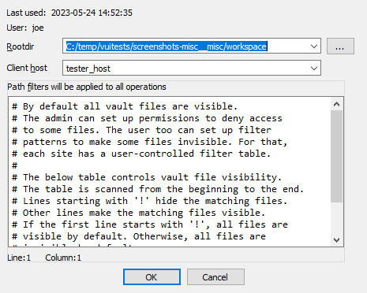

hv command reference manual
hv credentials
In order to connect to the vault server, hv must at least have:
- a username
- a password
- a hostname
For example:
$ hv -hhexvault.acme.com:65433 -uadmin -psecret users
LastActive Adm Login Email
---------- --- ------------ ------------
2022-06-27 * admin
2022-06-22 alice Alice <alice@acme.com>
Never bob Bob <bob@acme.com>
...
There are 3 ways to specify credentials (in decreasing order of priority):
- providing them as command-line arguments (as in the example above)
- storing them in environment variables
- storing them in the registry+keychain (recommended)
All credentials, including usernames, are case-senstive, meaning that "Joe" and "joe" would be different users.
Command line
Passing credentials on the command line will always take precedence over environment variables and registry+keychain.
-uUSERNAME |
specify username |
-pPASSWORD |
specify password |
-hHOST |
specify host (server:port) (if port is omitted, defaults to 65433) |
-sSITENAME |
specify site |
--set |
remember credentials. This option doesnt require the credentials to be passed through the command line, credentials passed through environment variables will work as well |
Environment variables
Credentials can also be passed through environment variables. They will take precedence over those possibly found in the registry+keychain.
VAULT_HOST |
the server host name |
VAULT_PORT |
the server port |
VAULT_USER |
the username to connect to the server |
VAULT_PASS |
the users password |
VAULT_SITE |
the site to use (most commands need a site to operate) |
Registry + keychain
Unless environment variables or command-line arguments are provided, hv will look for credentials in the registry (and the OSs keychain for passwords.)
Credentials can be stored in the registry (and keychain) like so:
alice@alice_PC$ hv --set -ualice -palice -hvaultserver -salice_on_alicepc
The user, host (and optional site) will be persisted in the registry, while the password will be saved to the OSs keychain.
For this operation to succeed, at least a user and host must be provided
In order to keep the various commands' syntax as clear as possible, we will assume that the user has stored credentials (in either the registry+keychain or environment variables) for the rest of this manual.
Best practices
We recommend persisting credentials using the registry+keychain method.
Once that is done, commands will become cleaner:
>./hv info
Hex-Rays Vault Server v1
Vault time: 2022-04-14 15:36:29, up since 2022-04-14 15:17:25
...
if you login to the server using hvui and save the login information, it will end up in the the registry+keychain method, and thus hv will then be able to use that information as well.
Path formats
Local paths refer to a file on the host file system.
Vault paths refer to a file mapped on the vault. They can start with // to refer to the root of the vault.
Some vault paths can optionally specify the revision of the path.
Special symbols were created to access specific revisions:
^ |
last revision available on the vault |
= |
current revision, that is synced on the site |
* |
all revisions |
Special file revision symbols
subdir/ |
means all files in all subdirectories |
subdir |
means all files in all subdirectories (same as subdir/) |
subdir/* |
means all files in the directory |
Directories and wildcards
Examples
Get the first revision of a file:
$ hv sync //malware/Ransomware.WannaCry/41aa.exe.i64#1
ok synced //malware/Ransomware.WannaCry/41aa.exe.i64#1 (838724 bytes)
ok sync completed
Sync to the last version of a file:
$ hv sync malware/Ransomware.WannaCry/41aa.exe.i64#^
ok synced //malware/Ransomware.WannaCry/41aa.exe.i64#3 (846916 bytes)
ok sync completed
Force sync to the current revision (we must specify -f to force a file transfer):
$ hv sync -f malware/Ransomware.WannaCry/41aa.exe.i64#=
ok synced //malware/Ransomware.WannaCry/41aa.exe.i64#2 (846916 bytes)
ok sync completed
Display md5 checksums of all revisions of a file:
$ hv md5 malware/Ransomware.WannaCry/41aa.exe.i64#*
ok 8F464140FA3DA4A20B03166F2E80325B //malware/Ransomware.WannaCry/41aa.exe.i64#1
ok E0F7B984151FEF497985F375C64FA5C7 //malware/Ransomware.WannaCry/41aa.exe.i64#2
ok 5C3B88306CF0D93DC35FFD67A710AE3B //malware/Ransomware.WannaCry/41aa.exe.i64#3
List Hex-Rays Vault servers toplevel directory contents:
$ hv dir //
2022-06-02 10:29:30 140267 CL29/edit //malware/cppobj_virtcall.i64#9
2022-06-14 16:44:19 2173541 CL36/edit //iOS/dyld_ios16.i64#3
Plan to add a file to the vault:
$ hv add /path/to/local_rootdir/enable.png
ok added '//enabled.png'
Plan to add a directory:
$ hv add /path/to/local_rootdir/REsearch
ok added '//REsearch/vm2vm.dat'
ok added '//REsearch/vm2vm.exe'
ok added '//REsearch/vm2vm.i64'
Plan to delete a file:
$ hv del /path/to/local_rootdir/REsearch/*.dat
ok checked out '//REsearch/vm2vm.dat' for 'del' (worklist 1)
Show worklist to which files were added:
$ hv worklist show
WL 1 add //REsearch/vm2vm.exe#0
WL 1 add //REsearch/vm2vm.i64#0
WL 1 edit //cppobj_virtcall.i64#9
WL 1 add //enabled.png#0
It is safe to interrupt a command using Ctrl-C. The file transfers in action will be gracefully terminated, so that no partially received files will be left on the disk. However, the requests that were delivered to the server will still be carried out up to the completion. For example, if the user asked to check out thousands of files for editing, this will be performed even if the user presses Ctrl-C after invoking the command.
If the command syntax specifies ellipsis (), it means that multiple path patterns can be specified. The path patterns can be specified using local paths or vault paths, which start with a double slash (//).
Commands
Sites
Commands in this section manipulate sites.
A user must be using a site in order for most commands to work correctly.
site add
site add [-u USER] SITENAME ROOTDIR [HOST]
Creates a new site.
The specified user will be the owner of the new site. If the user is not specified, the current user will own the site. Only the site owner can use a site.
Only admins can create sites for other users.
To use a site, it must be specified as described in the credentials section.
-u USER |
The user (owner) of the new site, must be an existing username. Defaults to the current user. Admins can specify a different user. |
SITENAME |
The name of the site that will be created, it must be unique (no site can already exist with that name). It must not exceed 64 characters, and it must be composed of alphanumerics or underscore or dash. The first character cannot be a digit or a dash. |
ROOTDIR |
The absolute path to the directory that will hold the vault files. |
HOST |
The computer from which the site can be used. It can be specified as an empty string. In this case the server will let the site to be used by any computer. However, since it is a safety feature that prevents from inadvertently using a site from a wrong computer, we do not recommend to specify it as an empty string. When creating a site for the current user, the host defaults to the current computer. |
Examples:
# Example: Create a new site:
alice@alice_PC$ hv site add alicepc /home/alice/vault_site
# Example: Ensure that is exists:
alice@alice_PC$ hv sites
Site name User Host Last Used Rootdir
--------- ----- -------- ---------- ------------
alicepc alice alice_PC Never /home/alice/vault_site
# Example: Remember the new site in the registry:
alice@alice_PC$ hv --set -salicepc
Information has been saved into the registry.
# Example: The new site is used in all future commands:
alice@alice_PC$ hv info |grep site
Client site: alicepc
site del
site del [-f] SITENAME
Deletes a site.
If -f was passed and the site has some pending worklists, they will be deleted.
This is not a reversible operation, so we recommend caution.
Only admins can delete sites that belong to other users.
-f |
Force the deletion even if the site still has worklists. |
SITENAME |
Name of the site to delete. |
Example:
# Example: Delete the site, forcing deletion of the site's worklists
alice@alice_PC$ hv site del alice_old_laptop
'alice_old_laptop' not empty
alice@alice_PC$ hv site del -f alice_old_laptop
site edit
site edit [-u USER] SITENAME ROOTDIR [HOST]
Edits an existing site's details, such as the rootdir and the host it is bound to.
Admins can reassign a site to a new user or edit sites of other users.
-u USER |
The new user (owner) of the site, can only be different than the previous owner if the current user is admin. |
SITENAME |
The name of the site that will be edited. It must exist and be owned by the current user, unless if the current user is admin. |
ROOTDIR |
The new absolute path to the directory that will hold the site files. |
HOST |
The new hostname that will be used for the site. It can be omitted if no changes are desired. |
Examples:
# Example: Change the root directory of a site:
alice@alice_PC$ hv site edit alicepc /home/alice/vault
# Example: Transfer ownership of site "local_on_shared_machine" to Bob:
alice@alice_PC$ hv site edit -u bob local_on_shared_machine /home/shared/projects re.acme.com
sites
sites [SITENAME]
Lists all sites.
Show a list of sites, and their associated information.
SITENAME |
Name of the site to show. |
Example:
alice@alice_PC$ hv sites
Site name User Host Last Used Rootdir Cur
---------- ------ ---------- ---------- ---------------------- ---
alicepc alice alice_PC 2022-06-22 /home/alice/vault_site *
joe_laptop joe ThinkPad14 2022-05-30 c:/work/vault
chrispc chris chris_PC Never W:/vault
Site filters
filt get
filt get [-s SITENAME]
Displays the filter table associated with the site.
Only admins can see filter tables of other users.
-s SITENAME |
The sitename whose filter table should be displayed. If omitted, defaults to the current site. |
Examples:
# Example: Show the default (i.e., empty) filter table
alice@alice_PC$ hv filt get
##### If the site filters were not set yet, the following info will be displayed:
alice@alice_PC$ hv filt get
##### By default all vault files are visible.
##### The admin can set up permissions to deny access
##### to some files. The user too can set up filter
##### patterns to make some files invisible. For that,
##### each site has a user-controlled filter table.
#####
##### The below table controls vault file visibility.
##### The table is scanned from the beginning to the end.
##### Lines starting with '!' hide the matching files.
##### Other lines make the matching files visible.
##### If the first line starts with '!', all files are
##### visible by default. Otherwise, all files are
##### invisible by default.
# Example: !*.mov will hide all *.mov files.
# Example: Set site filters from the standard input:
alice@alice_PC$ hv filt set
/work/research/
<Ctrl-D>
# Example: Verify the new filters:
alice@alice_PC$ hv filt get
/work/research/
##### The files outside of /work/research/ are not visible anymore
filt set
filt set [-s SITENAME] [@file]
Sets the filter table associated to the site, either interactively or from @file.
Information about the format of site filters can be retrieved by issuing the filt get command.
Only admins can modify filter tables of other users.
-s SITENAME |
The sitename whose filter table should be set. If omitted, defaults to current site. |
@file |
File containing the new table. |
Examples:
# Example: Make everything in the current site hidden, but `.bak` files
alice@alice_PC$ echo *.bak | hv filt set
# Example: Set site filters, from a file
alice@alice_PC$ cat @tablefile
*.idb
*.exe
alice@alice_PC$ hv filt set -s site1 @tablefile
File manipulation
add
add [-s] [-w WORKLIST_ID] PATH_PATTERN...
Adds new file(s) to a worklist.
Issuing this command will not upload the file(s) to the server right away: the new file name(s) will be placed into a worklist, which then needs to be committed to the server. Once a worklist is committed, its files will be available to other users.
The specified file(s) are not required to exist, it is possible to add a file that does not exist yet.
The files must be inside the site's rootdir.
The files will be filtered using hvignore rules.
-s |
Silent mode; do not output any messages. |
-w WORKLIST_ID |
The id of the worklist that the file(s) will be added to. If omitted, defaults to worklist 1. |
| PATH_PATTERN... | Local path to file(s) to add to the vault. |
Examples:
alice@alice_PC$ hv add new.idb
ok added '//new.idb'
# Example: add files to worklist 2
alice@alice_PC$ hv add -w 2 cuda_demo_suite/*
ok added '//cuda_demo_suite/bandwidthTest'
ok added '//cuda_demo_suite/busGrind'
ok added '//cuda_demo_suite/deviceQuery'
ok added '//cuda_demo_suite/nbody'
ok added '//cuda_demo_suite/nbody_data_files/nbody_galaxy_20K.bin'
ok added '//cuda_demo_suite/oceanFFT'
ok added '//cuda_demo_suite/oceanFFT_data_files/ocean.frag'
ok added '//cuda_demo_suite/oceanFFT_data_files/ocean.vert'
ok added '//cuda_demo_suite/oceanFFT_data_files/ref_slopeShading.bin'
ok added '//cuda_demo_suite/oceanFFT_data_files/ref_spatialDomain.bin'
ok added '//cuda_demo_suite/randomFog'
ok added '//cuda_demo_suite/randomFog_data_files/ref_randomFog.bin'
ok added '//cuda_demo_suite/vectorAdd'
copy
copy [-s] [-w WORKLIST_ID] SRC_PATH DST_PATH
Makes a copy of vault file(s).
This command creates a copy of the original file at the requested destination, and place the new file into a worklist. Once the worklist is committed, the new file will be visible to other users.
NOTE: The source file will be downloaded from the server to the new file. If the source file was modified locally, those modifications won't be part of the copy. This implies that if a file has just been added to the {hrvsrv} but not committed yet, it can't be copied because it does not exist on the server yet.
-s |
Silent mode; do not output any messages. |
-w WORKLIST_ID |
The id of the worklist that the files will be added to. If omitted, defaults to worklist 1. |
| SRC_PATH | The source path. |
| DST_PATH | The destination path. |
Examples:
# Example: Copy `newfile` into the `rust_samples` subdirectory. The worklist #2 will hold the change.
alice@alice_PC$ hv copy -w 2 newfile rust_samples/newfile
ok copied '//newfile#1' to '//rust_samples/newfile'
# Example: Copy an entire subdirectory (note the trailing slash at the destination):
alice@alice_PC$ hv copy source_subdir/ destination/subdir/
ok copied '//source_subdir/aaa/sample.idb#1' to '//destination/subdir/aaa/sample.idb'
ok copied '//source_subdir/common.idb#1' to '//destination/subdir/common.idb'
# Example: Copy a subdirectory without recursion:
alice@alice_PC$ hv copy source_subdir/* destination/subdir/
ok copied '//source_subdir/common.idb#1' to '//destination/subdir/common.idb'
# Example: Copy a file that was just added but not yet committed, it will fail:
alice@alice_PC$ hv add test.text
ok added '//test.text'
alice@alice_PC$ hv copy test.text test.text.copy
no matching files for '//test.text'
move
move [-s] [-w WORKLIST_ID] SRC_PATH DST_PATH
Opens tracked file(s) for moving/renaming.
This is similar to performing a copy, followed by a del: the new file will be checked out for copy while the original file will be checked out for deletion.
-s |
Silent mode; do not output any messages. |
-w WORKLIST_ID |
The id of the worklist that the file(s) will be added to. If omitted, defaults to the worklist 1. |
| SRC_PATH | The source path. |
| DST_PATH | The destination path. |
Example:
alice@alice_PC$ hv move //VxWorks/CP05x/info.txt //VxWorks/CP05x/info.md
ok moved '//VxWorks/CP05x/info.txt#1' to '//VxWorks/CP05x/info.md'
alice@alice_PC$ hv wk show 1
WL 1 copy //VxWorks/CP05x/info.md#0
WL 1 del //VxWorks/CP05x/info.txt#1
alice@alice_PC$ hv edit //VxWorks/CP05x/info.txt
file '//VxWorks/CP05x/info.txt' is already checked out
del
del [-s] [-w WORKLIST_ID] PATH_PATTERN...
Opens tracked file(s) for deletion, adding them to a worklist.
Once the worklist is committed, the file(s) won't be tracked anymore by the {hrvsrv}, and will be removed from the local filesystem.
NOTE: That this does not remove all revisions of the file on the server: that is the role of the purge command.
-s |
Silent mode; do not output any messages. |
-w WORKLIST_ID |
The id of the worklist that the file(s) will be added to. If omitted, defaults to worklist 1. |
| PATH_PATTERN... | Vault path of file(s) to delete. |
Example:
alice@alice_PC$ ls /path/to/site_rootdir/cat
/path/to/site_rootdir/cat
alice@alice_PC$ hv del -w2 cat
ok checked out '//cat' for 'del' (worklist 2)
alice@alice_PC$ ls /path/to/site_rootdir/cat
/path/to/site_rootdir/cat
alice@alice_PC$ hv commit 2 "Deleted 'cat'"
ok commit #39 completed
alice@alice_PC$ ls /path/to/site_rootdir/cat
ls: cannot access '/path/to/site/rootdir/cat': No such file or directory
edit
edit [-s] [-w WORKLIST_ID] PATH_PATTERN...
Opens tracked file(s) for edit, adding them to a worklist.
This command is used to instruct the {hrvsrv} that we will be working on files, so that it knows what revision of the file(s) that work will be based on and so later diff or resolve commands can work correctly.
-s |
Silent mode; do not output any messages. |
-w WORKLIST_ID |
The id of the worklist that the file(s) will be added to. If omitted, defaults to worklist 1. |
| PATH_PATTERN... | Vault path of file(s) to checkout for edit. |
Example:
alice@alice_PC$ hv edit cat.i64
ok checked out '//cat.i64' for 'edit' (worklist 1)
(...do some work...)
alice@alice_PC$ hv commit 1 "Analyzed 'main' function"
ok commit #12 completed
scan
scan [-a] [-e] [-d] [-s] [PATH_PATTERN...]
Reconciles the contents of the current directory (or the one(s) provided) on the local filesystem, with those of the corresponding path(s) on the server.
This command will recursively look for:
- new files (if
-ais provided) - deleted files (if
-dis provided) - modified files (if
-eis provided)
If any is found will create a new worklist and, add those for addition/deletion/modification.
This command is particularly useful if the user didn't have access to the server at a time it was necessary (e.g., to issue an edit command, while flying across the Atlantic.) Users can still get work done in such cases, and once they gain access to the server again, issue a scan to commit the changes.
NOTE: The -e option causes the scan command to compute checksums of the local files, in order to compare them against those known to the server, in order to spot modifications.
NOTE: If no options were given, defaults to -e -d.
The files found by the scan command will be filtered by hvignore.
-a |
Checkout for add files that are present only on the client side. |
-e |
Checkout for edit files that are present on both the vault and the client side but differ. |
-d |
Checkout for delete files that are present only on the server side. |
-s |
Silent mode; do not output any messages. |
| PATH_PATTERN... | Local path of file(s) to scan, if omitted defaults to current directory. |
Example:
alice@alice_PC$ hv scan -a -e -d //
added worklist 3
checked out '//afile' for 'del' (worklist 3)
checked out '//Win32.Emotet/29D6161522C7F7F21B35401907C702BDDB05ED47.bin.i64' for 'edit' (worklist 3)
Working with worklists
worklists
worklists [WORKLIST_ID] [USER]
Lists information about worklists.
Show a (possibly filtered) list of pending worklists, and their metadata:
- the timestamp of when they were last changed
- the number of files they contain
- the owner
- the site
- their description
See also worklist show
WORKLIST_ID |
Restrict to the provided worklist, defaults to showing all worklists. |
USER |
Restrict to user USER, defaults to the current user. |
Example:
alice@alice_PC$ hv worklists
WL 4 2022-06-27 17:24:51 2 files; $USER@$ALICE_SITE More work on L30DS2 firmware
Manipulating a worklist
The following worklist commands will also work with the shorter wk alias.
worklist add
worklist add DESCRIPTION
Creates a new worklist, with the provided description.
The worklist will initially be empty, and assigned a free ID.
Files can be associated to that new worklist when they are marked for addition, deletion, or edition.
DESCRIPTION |
The description of the new worklist. |
Example:
alice@alice_PC$ hv worklist add "Working on the 'TMutexLocker' vtable"
added worklist 3
alice@alice_PC$ hv edit -w 3 //cppobj*
ok checked out '//cppobj_virtcall.i64' for 'edit' (worklist 3)
alice@alice_PC$ hv worklist add "vm2vm: WIP"
added worklist 4
alice@alice_PC$ hv edit -w 4 //REsearch/*
ok checked out '//REsearch/vm2vm.exe' for 'edit' (worklist 4)
ok checked out '//REsearch/vm2vm.i64' for 'edit' (worklist 4)
worklist show
worklist show [-s SITE] [-u USER] [WORKLIST_ID]
Lists worklist contents.
Show a list of files opened for editing, addition or deletion, and their associated worklist(s).
-s SITE |
Restrict to site SITE. If omitted, defaults to the current site. |
-u USER |
Restrict to user USER. If omitted, defaults to the current user. |
WORKLIST_ID |
Restrict to the provided worklist, defaults to showing all worklists. |
Examples:
alice@alice_PC$ hv worklist show 3
WL 3 edit //cppobj_virtcall.i64#9
alice@alice_PC$ hv worklist show 4
WL 4 edit //REsearch/vm2vm.exe#1
WL 4 edit //REsearch/vm2vm.i64#1
alice@alice_PC$ hv worklist show
WL 4 edit //REsearch/vm2vm.exe#1
WL 4 edit //REsearch/vm2vm.i64#1
WL 3 edit //cppobj_virtcall.i64#9
# Example: Show the worklist contents of another user
alice@alice_PC$ hv worklist show -u ted
WL 4 edit //malware/unk_2022#1/6 SITE=ted_laptop
WL 2 copy //docs/onboarding.md#0 SITE=TEDPC
WL 1 del //ida64.i64#6 SITE=TEDPC
worklist edit
worklist edit WORKLIST_ID DESCRIPTION
Edits a worklist description.
WORKLIST_ID |
The worklist to modify. |
DESCRIPTION |
The new description for the worklist. |
Example:
# Example: change description of worklist 4
alice@alice_PC$ hv worklist edit 4 "vm2vm: resolved all offsets in 'main' function"
worklist del
worklist del WORKLIST_ID
Deletes a worklist.
This command will only succeed if the worklist is currently empty.
WORKLIST_ID |
The worklist to delete. |
Example:
alice@alice_PC$ hv worklist del 3
worklist 3 is not empty
alice@alice_PC$ hv revert //cppobj*
ok reverted //cppobj_virtcall.i64
alice@alice_PC$ hv worklist del 3
Committing a worklist to the server
commit
commit [-f] [-s] WORKLIST_ID [DESCRIPTION]
Commits files to the vault (push).
This command uploads files from the local computer to the vault.
After a successful commit, the modifications made to the files contained in the worklist will be made available for other users.
A commit may fail if another user uploaded another revision of the changed files meanwhile. In this case resolve is necessary to merge the changes.
If the worklist does not yet have a proper description, the DESCRIPTION is mandatory.
-f |
Force commit of unchanged files. |
-s |
Silent mode; do not output any messages. |
WORKLIST_ID |
The id of the worklist to commit to the vault. |
DESCRIPTION |
A description for the commit. |
Example:
alice@alice_PC$ hv commit 1
worklist 1 has empty description
alice@alice_PC$ hv commit 1 "more samples"
ok accepted //newfile#1 (5 bytes)
ok commit #2 completed
Syncing files, resolving & reverting
sync
sync [-f] [-p] [-s] [@COMMIT_ID] [PATH_PATTERN[=REVISION]...]
Downloads the requested revisions of the files from the server, and stores them on the local filesystem.
NOTE: If no paths are provided, all files from the server will be retrieved.
Requires that a site to be currently selected.
-f |
Force sync. This will force a download of the files, even when the server thinks the client has the desired revision. This is a dangerous operation: any modification made to local files will be lost. |
-p |
The server will perform sync without really transferring files. This options is useful if the local files are already in sync but the server has stale info about them. |
-s |
Silent mode; do not output any messages. |
@COMMIT_ID |
Sync to state right after COMMIT_ID was committed, cannot be used with =REVISION. |
| PATH_PATTERN[=REVISION]... | Vault path of file(s) to sync, if path is omitted, defaults to current directory, if no revision is specified, defaults to last revision available on vault (#^). |
Examples:
# Example: Sync all
alice@alice_PC$ hv sync
# Example: Sync only the specified subtree
alice@alice_PC$ hv sync -f //work/ds1_10
# Example: Sync a file to specific revision
alice@alice_PC$ hv sync //malware/Trojan.Shylock.Skype/D57D.i64#1
ok synced //malware/Trojan.Shylock.Skype/D57D.i64#1 (4374263 bytes)
ok sync completed
resolve
resolve METHOD PATH_PATTERN
Resolves conflicts in a file, using the specified strategy.
After the strategy is successfully applied and the local file has incorporated both the "local" and "remote" changes, it will be ready to be committed.
METHOD |
One of "auto", "lmerge", "rmerge", "manual", "local" or "remote". |
| PATH_PATTERN | Vault path of file(s) to resolve. |
Example:
alice@alice_PC$ hv resolve lmerge depot/file1.txt
revert
revert [-a] [-p] [-s] PATH_PATTERN...
Reverts opened files to their current revisions.
-a |
Revert only unchanged files. |
-p |
The server will revert the files without transferring files. |
-s |
Silent mode; do not output any messages. This options is useful if the local files are already in sync but the server has stale info about them. |
| PATH_PATTERN... | Vault path of file(s) to revert. |
Example:
alice@alice_PC$ hv revert -a //
ok reverted //Win32.Emotet/29D6161522C7F7F21B35401907C702BDDB05ED47.bin
ok reverted //Win32.Emotet/29D6161522C7F7F21B35401907C702BDDB05ED47.bin.asm
ok reverted //Win32.Emotet/29D6161522C7F7F21B35401907C702BDDB05ED47.bin.log
migrate
migrate [-s] PATH_PATTERN... WORKLIST_ID
Moves opened files between worklists.
-s |
Silent Mode; do not output any messages. |
| PATH_PATTERN... | Vault path of file(s) to move. |
WORKLIST_ID |
The id of the worklist to move the files to, the worklist must already exist. |
Example:
alice@alice_PC$ hv migrate afile subdir/for/fred/interfaces 3
ok migrated //afile#1 to worklist 3
ok migrated //subdir/for/fred/interfaces#0 to worklist 3
Various information
files
files [-d] [-s] [PATH_PATTERN_OR_SUBSTRING[=REVISION]...]
Displays the list of the files present in the vault.
The command will collect files from the vault (that match the selection) and display for each file:
- the file path
- the revision
- the file size if it hasn't been deleted
- the last commit id
- the last action
-d |
Include deleted files. |
-s |
Search for substring instead of using a path. |
| PATH_PATTERN_OR_SUBSTRING[=REVISION]... | Vault path of file(s) to include in search or substring to search for if -s. If revision is not specified, defaults to current revision (#=). If no path is specified, defaults to the root directory of the vault. |
Examples:
alice@alice_PC$ hv files -d //malware/Ransomware.WannaCry
//malware/Ransomware.WannaCry/ed01ebfbc9eb5bbea545af4d01bf5f1071661840480439c6e5babe8e080e41aa.exe#1 (size 3514368 CL1/add)
//malware/Ransomware.WannaCry/ed01ebfbc9eb5bbea545af4d01bf5f1071661840480439c6e5babe8e080e41aa.exe.asm#2 (CL2/del)
//malware/Ransomware.WannaCry/ed01ebfbc9eb5bbea545af4d01bf5f1071661840480439c6e5babe8e080e41aa.exe.i64#1 (size 838724 CL1/add)
//malware/Ransomware.WannaCry/ed01ebfbc9eb5bbea545af4d01bf5f1071661840480439c6e5babe8e080e41aa.exe.log#2 (CL2/del)
alice@alice_PC$ hv files -s i64
//malware/EquationGroup.GrayFish/GrayFish_9B1CA66AAB784DC5F1DFE635D8F8A904.i64#1 (size 2929035 CL1/add)
//malware/Ransomware.WannaCry/ed01ebfbc9eb5bbea545af4d01bf5f1071661840480439c6e5babe8e080e41aa.exe.i64#1 (size 838724 CL1/add)
//malware/Trojan.Ransom.Petya/eefa052da01c3faa1d1f516ddfefa8ceb8a5185bb9b5368142ffdf839aea4506.i64#1 (size 4535045 CL1/add)
//malware/Trojan.Shylock.Skype/Shylock-skype_8FBEB78B06985C3188562E2F1B82D57D.i64#1 (size 4374263 CL1/add)
//malware/Win32.Emotet/29D6161522C7F7F21B35401907C702BDDB05ED47.bin.i64#1 (size 319858 CL1/add)
dir
dir [-d] [-s] [-u] PATH_PATTERN_OR_SUBSTRING...
Displays vault directory listing (current revisions).
For each file entry the command will display:
- the timestamp of when the file was committed
- the file size
- the commit id
- the type of action that was executed on the file in the commit
- the path
- the current revision on disk
- an extra label if the file is unsynced
Directories will be displayed as: <subdir> PATH
-d |
Include deleted files. |
-s |
Path patterns are simple substrings. |
-u |
Include unsynced files. |
| PATH_PATTERN_OR_SUBSTRING... | Vault path of file(s) to include in search or substring to search for if -s. |
Examples:
alice@alice_PC$ hv dir -u -d //
1970-02-04 01:52:08 573440 CL1/add //malware/EquationGroup.GrayFish/A904#1
2022-06-29 11:30:10 0 CL2/del //malware/EquationGroup.GrayFish/A904.asm#0/2 UNSYNCED
1970-02-04 01:52:08 2929035 CL1/add //malware/EquationGroup.GrayFish/A904.i64#1
2022-06-29 11:30:10 0 CL2/del //malware/EquationGroup.GrayFish/A904.log#0/2 UNSYNCED
1970-02-04 01:52:08 3514368 CL1/add //malware/Ransomware.WannaCry/41aa.exe#1
2022-06-29 11:30:10 0 CL2/del //malware/Ransomware.WannaCry/41aa.exe.asm#0/2 UNSYNCED
2022-06-29 13:52:57 846916 CL3/edit //malware/Ransomware.WannaCry/41aa.exe.i64#2/3 UNSYNCED
alice@alice_PC$ hv dir "//*"
<subdir> //malware
show
Writes the contents of a file on the vault to the command line.
| PATH_PATTERN[=REVISION] | Vault path to file(s) to display. If no revision is specified, defaults to current revision (#=). If the file revision denotes a deleted revision of the file, the contents will not be displayed. |
Example:
alice@alice_PC$ hv show patterns/ubuntu-libgcc-10.pat
415729CE415641554D89C54154554C89CD5389D34881EC280100004C8BBC2470 FF 15C2 14AD :0000 add_and_round.constprop.0 010000F30F6F842470010000C7442474000000004C8B842480010000C7442478000000000F294424504C8B742458F30F6F8C24800100004C897C2428488B9424
415729CE415641554D89C54154554C89CD5389D34881EC280100004C8BBC2470 FF 90F7 14A0 :0000 add_and_round.constprop.0 010000F30F6F842470010000C7442474000000004C8B842480010000C7442478000000000F294424504C8B742458F30F6F8C24800100004C897C2428488B9424
415729CE415641554D89C54154554C89CD5389D34881EC380100004C8BBC2480 FF 2016 157D :0000 add_and_round.constprop.0 0100004C8B842490010000C784248400000000000000F30F6F842480010000F30F6F8C2490010000C7842488000000000000004C897C2438488B842470010000
415741564155415455534881EC780100004889542410488B9424B80100004889 FF 26D7 8168 :0000 bid128_ext_fma 4C24184C8BB424B001000048B9DDBADDBADDBADDBA4889742408488B8424C801000048..................48893C244C89F34C8B9C24C001000048898C24C0
415741564155415455534881EC780100004889542410488B9424B80100004889 FF D77A 80B0 :0000 bid128_ext_fma 4C24184C8BB424B001000048B9DDBADDBADDBADDBA4889742408488B8424C801000048..................48893C244C89F34C8B9C24C001000048898C24C0
...
diff
diff PATH[=REVISION] PATH_OR_REV[=REVISION]
Compares two databases, will launch IDA in diff mode.
Only IDA databases (.i64, .idb) can be diffed with this command. If revisions of databases requested for comparison are currently not in the site, they will be downloaded to a temporary directory and will be deleted when IDA exits. On unix the temporary directory can be specified with $TMPDIR.
| PATH[=REVISION] | Database 1. |
| PATH_OR_REV[=REVISION] | Database 2. If no path is specified, it will default to the path of Database 1. If no revision is specified, it will default to the current revision (#=). |
Examples:
# Example: with `interfaces.i64` opened for edit and changed, this will open IDA and show the differences with the current revision on vault
alice@alice_PC$ hv diff interfaces.i64
alice@alice_PC$ hv changes interfaces.i64
CM 9 2022-06-30 23:55:33 edit alice@alicepc interfaces.i64: deobfuscated some string
CM 8 2022-06-28 23:30:17 edit john@johnpc interfaces.i64: annotated areas to inves
CM 1 1970-02-04 01:52:08 add john@johnpc added samples
alice@alice_PC$ hv diff interfaces.i64 "#2"
md5
Prints the md5 checksum of a file on the vault.
| PATH_PATTERN[=REVISION] | Vault path of file(s) to process, if no revision is specified, defaults to the current revision (#=). |
Example:
alice@alice_PC$ hv md5 Win32.Emotet/29D6161522C7F7F21B35401907C702BDDB05ED47.bin
ok D243C0B2DBA37565CE3601AD78A73E07 //Win32.Emotet/29D6161522C7F7F21B35401907C702BDDB05ED47.bin#1
info
info
Displays info about the vault and current session.
Example:
alice@alice_PC$ hv info
Hex-Rays Vault Server v1
Vault time: 2022-06-29 00:13:55, up since 2022-06-28 09:40:53
License user : Johnny Appleseed
License email: john@appleseed.net
License: IDAULTTL; 10 users out of 30; expires on 2023-10-13
MAC address: 7F:A7:B3:C1:8D:79
Vault directory: /opt/hexvault/files
Client name: john *ADMIN*
Client site: johnpc
Client host: johnpc (127.0.0.1)
Client root: /home/john/vault
Login time : 2022-06-29 00:13:55
Last active: 2022-06-29 00:13:55
changes
changes [-s SITENAME] [-u USERNAME] [-c MIN_COMMIT] [-C MAX_COMMIT] [-m MAX_REPORTED_ENTRIES] [-d MIN_DATE] [-D MAX_DATE] [-l] [PATH_PATTERN...]
Displays list of commits that affect a path.
List can be refined using options.
For each commit the following info will be displayed:
- the commit id
- the timestamp of the commit
- if only one file was changed, the action that was done to it (e.g.
edit) - the user who sent the commit
- the site from which the commit was sent
- a description of the commit, truncated to 40 chars unless if
-lis enabled
[horizontal] TIP:: This command is also available under the alias commits.
-s SITENAME |
Restrict to commits from SITENAME. |
-u USERNAME |
Restrict to commits from USERNAME. |
-c MIN_COMMIT |
Restrict to commits after commit: MIN_COMMIT. |
-C MAX_COMMIT |
Restrict to commits prior to commit: MAX_COMMIT. |
-m MAX_REPORTED_ENTRIES |
Limit number of reported commits to: MAX_REPORTED_ENTRIES. |
-d MIN_DATE |
Restrict to commits after MIN_DATE using format YYYY-MM-DD. |
-D MAX_DATE |
Restrict to commits prior to MAX_DATE using format YYYY-MM-DD. |
-l |
Display long (>40 characters) commit descriptions. |
| PATH_PATTERN... | Filter commits by vault paths. If omitted, defaults to all files. |
Examples:
# Example: find all commits made by john
alice@alice_PC$ hv changes -u john
CM 109 2022-04-05 17:09:18 john@johnpc reverted commit 85
CM 108 2022-04-05 17:00:02 john@johnpc added more malware samples
CM 107 2022-04-05 16:37:02 john@johnpc WannaCry: annotated a few funcs
CM 106 2022-04-05 16:35:57 john@johnpc removed unused files
# Example: show last 2 commits on a file with full descriptions
alice@alice_PC$ hv changes -m 2 -l //iOS/dyld_ios16.i64
Commit 42 2022-06-14 16:44:19 edit gregm@gregpc
iOS: dyld iOS 16 WIP
annotated more struct members
Commit 35 2022-06-14 00:35:43 edit gregm@gregpc
iOS: RE of ios16 split cache loading
discovered some structures and their members
users
users
Shows users.
Example:
alice@alice_PC$ hv users
LastActive Adm Login RealName/Email Notes
---------- --- ------- ---------------------- -----
2022-07-27 * admin
2022-09-16 alice Alice <alice@acme.com>
Never bob Bob <bob@acme.com>
groups
groups
Displays all the existing groups and their users.
Example:
alice@alice_PC$ hv groups
malware: alice michael matt sarah jason
audit: stephen ilse
interns: russ
group show
group show GROUP_NAME
Displays the list of users in a group.
GROUP_NAME |
A group name. |
Example:
alice@alice_PC$ hv group show "malware"
malware: alice michael matt sarah jason
user show
user show USERNAME
Displays the full details of a specific user.
The following details will be displayed:
- the timestamp of when the user was last active
- the username, with a
*next to it if the user has admin privileges - the license id of the user
- the full name of the user
- the email address of the user
- notes about the user
USERNAME |
The username of the user to display. |
Example:
alice@alice_PC$ hv user show johndoe
2022-06-27 johndoe 99-9999-9999-99 John doe <johndoe@doe.net> NOTES
commit show
commit show COMMIT_ID
Displays the contents of a commit.
This will list all of the files that were changed by the commit.
For each file the following details will be displayed:
- the action that was performed on it in the commit
- the path
- the revision
- if it's unsynced, an extra label will be displayed
- the size of the file
COMMIT_ID |
The id of the commit to display. |
Example:
alice@alice_PC$ hv commit show 5
add //cat.i64#1 (size 503909)
Misc.
passwd
passwd PASS [USER]
Sets a new password for a user.
PASS |
The new password. |
USER |
The username whose password should be changed. Only admins can change other users' passwords. If omitted, defaults to the current user. |
Examples:
alice@alice_PC$ hv passwd newpw
alice@alice_PC$ hv passwd newpw user1
commit edit
commit edit COMMIT_ID DESCRIPTION
Edits a commit description.
Regular users may modify only their own commits. Admins may modify any commit.
COMMIT_ID |
The id of the commit to amend. |
DESCRIPTION |
New description of the commit. |
Example:
alice@alice_PC$ hv commit edit 42 "removed unused file, it had been wrongfully added with commit #39"
licenses
licenses
Shows active licenses
Example:
alice@alice_PC$ hv licenses
Vault licenses:
99-9999-9999-99 IDAULTTW: used 2 out of 10 seat(s)
Expires: 2023-04-15
Online users: john@johnpc (99.999.99.99): 1 IDA instance(s)
borrow
borrow PRODUCT END_DATE
Borrow a license
A borrowed license can be used offline but other users will not have access to it.
A borrowed license can be returned to the vault using return. If not returned earlier, it will automatically be returned to the vault at the expiration time.
PRODUCT |
The product code or license id. |
END_DATE |
YYYY-MM-DD - exact date, +Nd - N days since now, +Nw - N weeks since now. DD-MON-YYYY can be used to specify an exact date too. |
Example:
alice@alice_PC$ hv borrow IDAULTTW 2022-07-31
License IDAULTTW 99-9999-9999-99 has been borrowed until 2022-07-31 00:00:00
alice@alice_PC$ hv borrow IDAULTTL +6d
License IDAULTTL 99-9999-9999-99 has been borrowed until 2022-07-31 13:53:23
return
return PRODUCT
Return a borrowed license
A returned license becomes available to other vault users.
PRODUCT |
The product code or license id. |
Example:
alice@alice_PC$ hv return IDAULTTW
Licence 99-9999-9999-99 has been returned
gc
gc [-r] [-s] MAX_SIZE PATH_PATTERN...
Deletes old files from the vault cache on the client.
This command examines the contents of the .vault subdirectory in the specified directories and deletes old files from them, so that the total size of files does not exceed MAX_SIZE. MAX_SIZE can be specified as a plain number of bytes or using the k,M,G suffixes to denote KBs, MBs, GBs. The default value is 1GB.
If -r is specified, all subdirectories of the current directory will be processed.
-r |
Recursive |
-s |
Silent mode; do not output any messages. |
MAX_SIZE |
max size of the cache. |
| PATH_PATTERN... | Local directories to process |
Example:
alice@alice_PC$ hv gc 3G /mydir
deleted /mydir/.vault/B52C6B8E8039752CE8BC6793816EB490: 120M freed, still 4.19G used
deleted /mydir/.vault/C693254A5A370F609CC86A1F31CE5B84: 149M freed, still 4.05G used
deleted /mydir/.vault/90CFB553818B2C44DE25759C0D14C811: 670M freed, still 3.39G used
deleted /mydir/.vault/E8652439192CD33E8D4417C468AFFA49: 213M freed, still 3.18G used
deleted /mydir/.vault/D0F3CF8A94A646E6EBBB15BD54847B31: 404M freed, still 2.79G used
Administrative commands
These commands require that the user executing them has admin privileges.
Managing users
user add
user add USERNAME REALNAME EMAIL IS_ADMIN NOTES
Adds a user.
USERNAME |
The username of the user. |
REALNAME |
The full name of the user. |
EMAIL |
The email address of the user. |
IS_ADMIN |
Should be 1 if the user is admin, otherwise 0. |
NOTES |
Extra notes about the user. |
Example:
alice@alice_PC$ hv user add johndoe "John Doe" johndoe@doe.net 0 "NOTES"
user edit
user edit USERNAME REALNAME EMAIL IS_ADMIN NOTES
Edits a user definition.
USERNAME |
The username of the user to modify. |
REALNAME |
The full name of the user. |
EMAIL |
The email address of the user. |
IS_ADMIN |
Should be 1 if the user is admin, otherwise 0. |
NOTES |
Extra notes about the user. |
Example:
alice@alice_PC$ hv user edit johndoe "John Doe" john_doe@doe.net 0 "NOTES"
user del
user del [-b] [-f] USERNAME
Deletes a user.
Cuation: deleting a user with borrowed licenses will make the borrowed licenses unavailable until their expiration date.
-b |
Force deletion even if the user has borrowed licenses. |
-f |
Force deletion even if the user has checked out files. |
USERNAME |
The name of the user to delete from the vault. |
Example:
alice@alice_PC$ hv user del -f johndoe
Managing groups
group add
group add GROUP_NAME
Adds a new group.
An empty group with the specified name is created.
GROUP_NAME |
the name of the new group. |
Example:
alice@alice_PC$ hv group add my_group
group edit
group edit GROUP_NAME USER ADD_OR_DELETE
Edits a group by adding or deleting users.
GROUP_NAME |
the name of the group. |
USER |
the name of the user. |
ADD_OR_DELETE |
add or delete the specified user from the group, 0 is delete, 1 is add. |
Example:
alice@alice_PC$ hv group edit "my_group" "user1" 1
alice@alice_PC$ hv group edit "my_group" "user1" 0
group del
group del GROUP_NAME
Deletes a group.
GROUP_NAME |
the name of the group to delete. |
Example:
alice@alice_PC$ hv group del my_group
Managing permissions
perm get
perm get
Displays permission table.
The current permission table is printed to the standard output.
Example:
alice@alice_PC$ hv perm get
##### The permission for each vault file is determined as the result of applying
##### all matching lines, from the beginning of the permission table to the end.
##### An empty permission table grants all access to everyone.
##### A non-empty permission table starts by denying all access to everyone.
grant user fred write //subdir-for-fred/
deny group remote list //local-secret
grant group analysts write //subdir/for/idbs/
grant user * read //subdir/for/idbs/
perm set
perm set [@FILE]
Sets new permissions table from STDIN or from file.
The installed permission table becomes active immediately.
We recommend using perm check to ensure that the new permission table works correctly.
@FILE |
The file from which to set the new permissions table. |
Example:
alice@alice_PC$ hv perm set <perms.txt
perm check
perm check USERNAME PATH_PATTERN
Checks permissions for a user.
The list of files that are visible to the user is printed, along with the permissions that the user has. The read access is denoted by 'r' and the write access is denoted by 'w'.
USERNAME |
The USERNAME of the user whose permissions that will be tested. |
| PATH_PATTERN | Vault path of file(s) that will be tested. |
Example:
alice@alice_PC$ hv perm check fred
rw //subdir-for-fred/afile
rw //subdir-for-fred/anotherfile
r- //subdir/for/idbs/interfaces.i64
alice@alice_PC$ hv perm check fred //local-secret
Others
sessions
sessions
Displays the sessions info.
For each session on the vault, the following info will be displayed:
- the site
- the user
- the hostname
- the timestamp of the login time
- the timestamp of the last activity
- "ADM" if the user has admin privileges
- "*" for the session executing the command
Example:
alice@alice_PC$ hv sessions
gregpc gregm GREGPC-554HW LOGIN=2022-07-04 LAST=2022-07-04 ADM *
lindapc linda lindasmac LOGIN=2022-07-02 LAST=2022-07-04
purge
purge [-s] [-y] PATH_PATTERN...
Purges file(s) from the Vault server, permanently deleting it and all of its history.
The path patterns must be specified using full paths, starting with //
-s |
Silent mode; do not output any messages. |
-y |
Really purge the files, without this parameter the command does a dry-run. |
| PATH_PATTERN... | Vault path of file(s) to purge from the vault. |
Example:
alice@alice_PC$ hv purge -s -y //work/ds1_10 //work/more_work
Concepts
What is a "site"?
A site represents a mapping of the server files to the local filesystem. Normally each computer has a site associated with it. A site has the following attributes:
- A site name
- A host name
- The path to a folder on the filesystem (a.k.a., "root directory")
- Path filters (optional)

Root directory
The root directory is the essential attribute of a site. It denotes where all files from the vault server will be mapped to the local disk. Everything inside the root directory can potentially be uploaded to the vault server and shared with other team members.
The vault server cannot manage files located outside the root directory. However, this limitation is straightforward to overcome: create a symbolic link (or, on Windows, a junction point) from the root directory to the directory of your choice. This will make the target of the symbolic link visible as part of the root directory.
The vault server keeps track of each site's state: what files have been downloaded to the local disk, what files have been checked out for editing, etc. This simplifies the housekeeping tasks, especially for big repositories with millions of files. Even for them, downloading the latest files or reconciling the local disk with the server, are almost instantaneous.
The host name is a security feature that prevents from using a site on a wrong computer. Since the server keeps track of the files downloaded to each site, using a wrong site may lead to an inconsistent mapping between the server and local disk. However, if the user does not want this protection, it is possible to erase the host name in the site definition.
Sites can be edited from the "Sites" view.
Path filters
By default all server files are visible, but for servers that manage gigabytes of data this can be problematic: it may be undesirable for users to download all files to their local computer.
Site filters provide a mechanism that lets users restrict the set of files their IDA Teams client works with. Users who want to work on some specific projects can set a filter that restricts the visibility only to selected subdirectories.
Each site has its own filters, that con be modified at any time. Filters do not directly affect any files on the local disk, or on the server: they are strictly about visibility.
WARNING: Site filters are meant simplify a user's life by letting them focus on specific projects. Since they can be modified by users, they should not be considered a security measure: that would be the role of the permissions system, which can only be managed by vault_server administrators.
NOTE: The purpose of site filters is to create a subset of the full set of files provided by the server. Site filters don't directly affect what locally-available files (i.e., present in the site's rootdir, but not tracked by the server) are visible by IDA Teams clients.
There is another mechanism to specify what files should not be added to the vault. See .hvignore for more info.
Examples
An empty filter
$ cat empty_filter.txt
$
Hide all files, except those in malware/
$ cat only_malware.txt
malware/
$
Show all files, except those from the pentesting team
$ cat hide_pentest.txt
!pentesting/
$
Show all files but those from the pentesting team, except their produced documents
$ cat hide_pentest_but_docs.txt
!pentesting/
pentesting/research_docs/
$
Resolving conflicts in a file
When a user needs to commit changes made to a file, but that same file has received other modifications (likely from other users) in the meantime, it is necessary to first "merge" the two sets of modifications together.
When the two sets of modifications do not overlap, merging is trivial
- at least conceptually. But when they do overlap, they produce conflict(s).
Since IDA Teams focuses on collaboration over IDA database files, the rest of this section will focus on the different strategies that are available for resolving conflicts among those.
IDA Teams comes with multiple strategies to help in conflict resolution of IDA database files:
Auto-resolve (if no conflicts)
Launch IDA in a non-interactive batch mode, attempting to perform all merging automatically.
If any conflict is discovered, bail out of the merge process, and don't modify the local database.
Auto-resolve, prefer local
Launch IDA in a non-interactive batch mode, attempting to perform all merging automatically.
If a conflict is discovered, assume that the "local" change (i.e., the current user's change) is the correct one, and apply that.
Once all merging is done and conflicts are resolved, write those to the local database and exit IDA
Auto-resolve, prefer remote
Launch IDA in a non-interactive batch mode, attempting to perform all merging automatically.
If a conflict is discovered, assume that the "remote" change (i.e., the change made by another user) is the correct one, and apply that.
Once all merging is done and conflicts are resolved, write those to the local database and exit IDA
Interactive merge mode
Manual merge mode.
This will launch IDA in an interactive, 3-pane mode, allowing the user to decide how to resolve each conflict.
Once all merging is done and conflicts are resolved, exit IDA and write the changes to the local database.
Use local, discard remote
Select the local database, ignoring all changes in the remote database.
No IDA process is run.
Use remote, discard local
Select the remote database, ignoring all changes in the local database.
No IDA process is run.
hvignore (and .hvignore) files
IDA Teams comes with a mechanism that lets users specify what files should be ignored when adding files from their local machines to the vault_server.
The main hvignore file (path/to/install-dir/hvignore)
In IDA Teams' install directory, you will find the "main" hvignore file, that is pre-populated with a list of files that you would typically not want to add to the vault_server, such as .bak backup files and unpacked IDA database files: .id0, .nam, etc...
The syntax for hvignore is very close to that of .gitignore files.
Additional .hvignore files
In addition to that file, you can have .hvignore file (notice the . - dot) placed in your site's directory structure.
When found, those files' contents will be appended to the main file's contents.
The registry
On Microsoft Windows, IDA Teams will store certain bits of information in the registry (host name, user name, site name.)
On macOS and Linux, it will use a pseudo-registry file, located at $HOME/.idapro/hvui.reg.
Passwords storage in the OS's keychain
While hosts, user names & site names are persisted to the registry, passwords are stored securely in the operating system's keychain.
- On Windows, the Windows Credential Store is used (therefore requiring Windows 7 or newer)
- On macOS, the macOS Keychain is used
- On Linux, the "Secret service" is used (through
libsecret-1)
Managing permissions on a vault
The vault_server includes a way to restrict the access of users and groups to the data stored in the vault_server.
The permission file is a text file that contains the permission table. The file consists of lines that grant or deny access to certain path patterns in the vault. The syntax for an entry is the following:
grant/deny group/user NAME PERMISSION VAULT_PATH_PATTERN
Possible PERMISSION values are: list, read and write. read includes list, write includes read (and thus also includes list).
Example of a permission file:
# deny everything to everyone. no need to specify it explicitly,
# it is the default for a non-empty permission table:
# deny user * list //*
deny user * list //secret/ # nobody can see //secret. this line is superfluous
# because everything is denied by default.
grant user hughes write //secret/ # but hughes can write to secret and its subdirs
grant user john read //secret/ # and john can read the entire directory.
deny user * list //secret/supersecret # supersecret is not visible to anyone
grant user hughes write //secret/supersecret # but hughes can modify it (john cannot)
grant user * write //local_files/ # everyone can work with 'local_files'
deny group remote list //local_files/ # except that the 'remote' group cannot see 'local_files'
An empty permission table means that no permissions are enforced rendering all files accessible by everyone. As soon as a non-empty permission table is specified, all access is denied to everyone by default.
Path patterns may refer to (yet) unexisting files. Users and groups too may refer to unexisting users and groups.
The order of the permission file is important as the last lines will take precedence over the preceding lines (if there are conflicts).
Admins are not affected by the permission table, they are granted all access.
To install a new permission table, use perm set
The current permissions can be retrieved using perm get